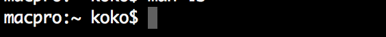
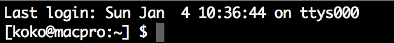

Mac - 使 Mac Terminal 有顏色 ( Prompt 與 ls )
Posted on Tue 06 January 2015 in 編輯器
前言
開始學習使用終端機（ Terminal ），但是預設的 Terminal 只有兩種顏色，通常都是黑白配色，而 Mac 的終端機雖然可以有編輯配色，但是依然還是很單調，所以這邊要來筆記一下，如何更改配色。
使用現有的配色方案－以 solarized 為例
在網路上已經有許多提供給終端機的配色方案，而這邊以算是滿 popular 的 solarized 為例，介紹如何安裝網路上提供的現有配色方案。
1. 下載 solarized 配置檔
首先我們下載 solarized 配置檔並解壓縮後，會看到 solarized 提供了許多可以配置的環境：

2. 執行配色檔案
在上圖你會看到 solarized/osx-terminal.app-colors-solarized 這個目錄下有一些檔案。如果是使用 Terminal，則直接點擊 Solarized Dark ansi.terminal 與 Solarized Light ansi.terminal，透過安裝配色檔案到 Terminal 中即可完成了。

修改執行 ls 指令時顯示的配色
如果我們希望顯示的資料夾或檔案依據不同類型而有配色時，那我們便需要對 ls 這個指令做修改。
1. 啟動 ls 配色功能
首先在 Home 中開啟 .bash_profile ( 如果沒有則新建 )
在檔案中加入以下此行：
export CLICOLOR=true
儲存後，再重新開啟 Terminal 打入 ls 便會發現顏色不同。
2. 客製化 ls
不過上述設定 CLICOLOR 是開啟預設的配色，如果要客製化怎麼辦？ 那麼我們就可以透過 LSCOLORS 來手動修改，如下：
export LSCOLORS="fxexbxdxcxegedabagacad"
不過上述這很長的字串是什麼呀？ 這是 Terminal 的 ls 指令配色格式， LSCOLORS 需要照著順序設定顏色，依序是：
- directory
- symbolic link
- socket
- pipe
- executable
- block special
- character special
- executable with setuid bit set
- executable with setgid bit set
- directory writable to others, with sticky bit
- directory writable to others, without sticky bit
顏色的對應值如下，例如 a 表示黑色，b 表示紅色，以此類推。
- a = black
- b = red
- c = green
- d = brown
- e = blue
- f = magenta
- g = cyan
- h = light grey
- A = bold black, usually shows up as dark grey
- B = bold red
- C = bold green
- D = bold brown, usually shows up as yellow
- E = bold blue
- F = bold magenta
- G = bold cyan
- H = bold light grey; looks like bright white
- x = default foreground or background
而因為每種類型文件都有兩種顏色 - 前景色與背景色，所以上述這串 LSCOLORS 的設定如果數算下來會是剛好 22 個字元長度。
export LSCOLORS="fxexbxdxcxegedabagacad"
像是的開頭 fx 表示目錄的前景色是 magenta，背景底色是原先 Terminal 的底色以此類推，設定完後如下圖：
另外，如果覺得這長串的配色很難設定，也可以參考此網站，透過所見即所得來協助產生 LSCOLORS 的配色字串。
顯示執行 ls 時，各種檔案目錄所夾帶的額外訊息
其實也就是預設包含 -F 指令，使其輸入 ls 時，如果是目錄可以看到 slash(/)，如果是執行檔可以看到 (*) 等功能，一樣編輯 .bash_profile 並加入：
alias ls='ls -Fh'
最後重新開啟 Terminal 即可，如下

修改 Termnial bash Prompt 的顯示內容與順序
這部分是可以用來修改 Terminal 的 Prompt 顏色與順序，原先如下圖：

首先我們可以改變顯示的順序與規則，例如我要修改成下圖這樣的排列：

我們要從修改 .bash_profile 檔案動刀，開啟此檔案並編輯加入此行：
export PS1='[\u@\h:\w] $ '
完成後再重新開啟 Terminal 即會完成。
其中這些符號代表的意思如下：
PS1: 主要的 Prompt，其他還有PS2、PS3與PS4\u: 代表現在操作的使用者名稱\h: 主機名稱\w: 表示目前所在的目錄
至於 @, :, $ 還有 []只是用來分隔使用者名稱、主機名稱與目錄用的符號而已。
更多的參數如下圖，來源 Color Bash Prompt

修改 Prompt 的顏色
而修改顏色的部分，則是在上述的參數在另外補上顏色參數：
export PS1='[\[\e[0;96m\]\u\[\e[0m\]@\[\e[0;92m\]\h\e[0m\]:\w] \e[0;93m\]$\[\e[0m\] '
使用的顏色有：
- Cyan:
\e[0;96m - Green:
\e[0;92m - Yellow:
\e[0;93m - Text Rest:
\e[0m
此外要使用顏色需要在上述的顏色符號前後加上 [ 與 ] 來作為一個標記，所以如果要在 \u 也就是操作使用者字串上加上顏色，會變成如下的格式 :
\[\e[0;96m\]\u
但是上述還會造成一個問題，就是 Cyan 這個顏色會影響到 ＠ 符號，因為顏色會被繼續使用下去，此時便會需要使用到 Text Rest 來重置。
如果你只想要某個符號只有 Cyan，當你配好顏色後要記得在後面補上 \e[0m，同時也要在前後加上 [ 與 ] 變成所以最後結果會是：
\u變成 =>[\e[0;96m]\u[\e[0m]\h變成=>[\e[0;92m]\h\e[0m]$變成=>\e[0;93m]$[\e[0m]
其他部分保持不變。
完成。
更多的顏色配色參數如下 ( 來源 Color Bash Prompt ):